12 pantallas y ventanas · Mismo estilo aprobado en Mantenimiento · Propuesta visual, todavía sin implementar.
Resumen, historial, agenda, hallazgos y plantillas en una sola área. Las inspecciones se realizan en la app; la web permite revisar, programar y dar seguimiento.
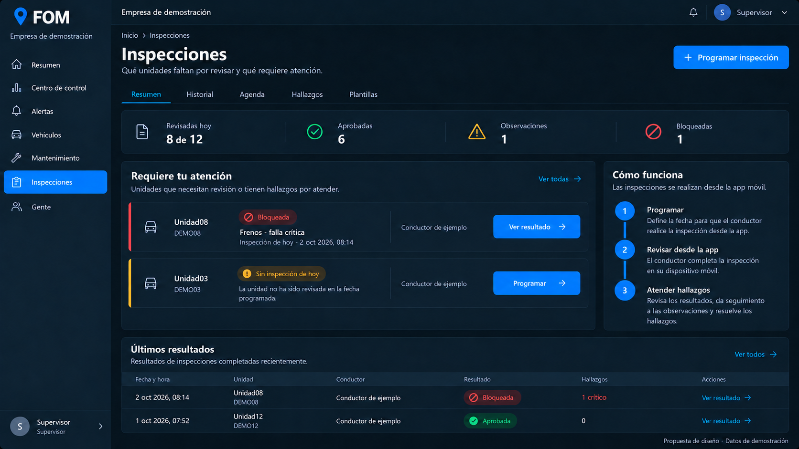
Abrir imagen completa
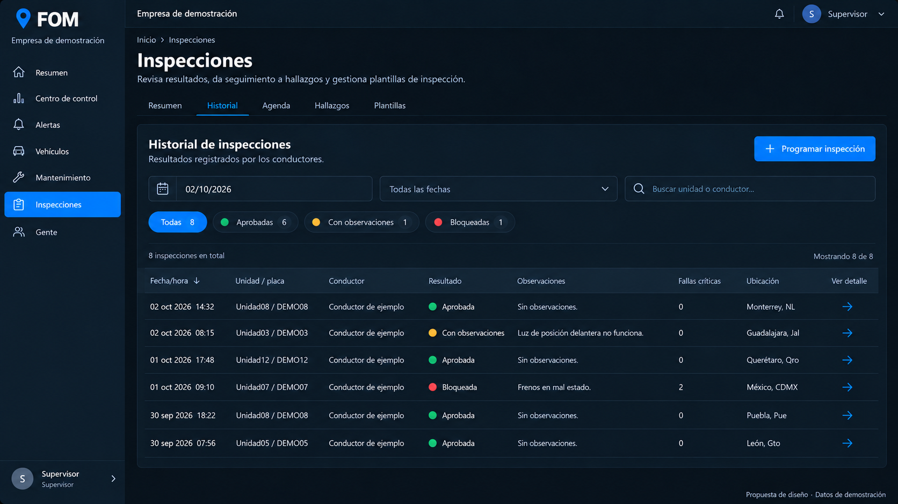
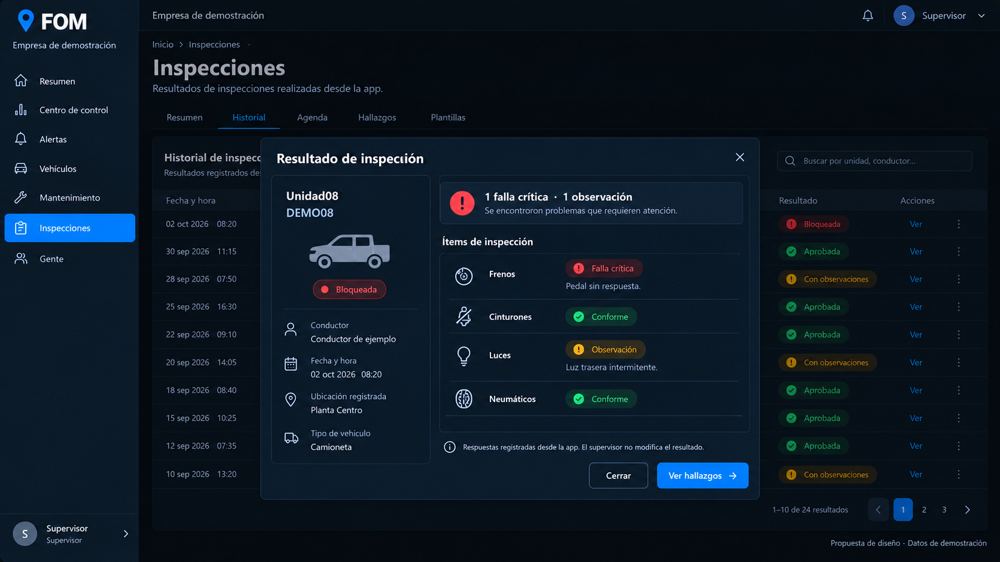
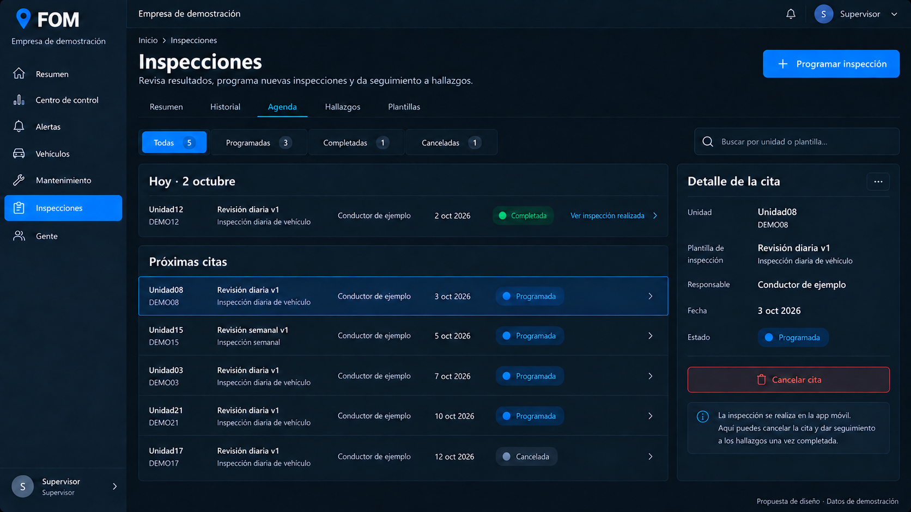
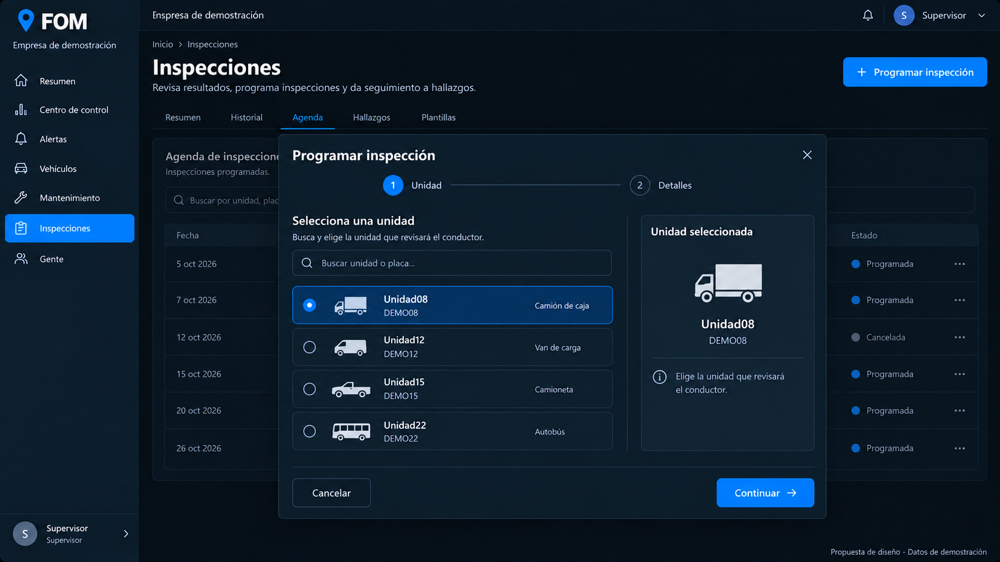
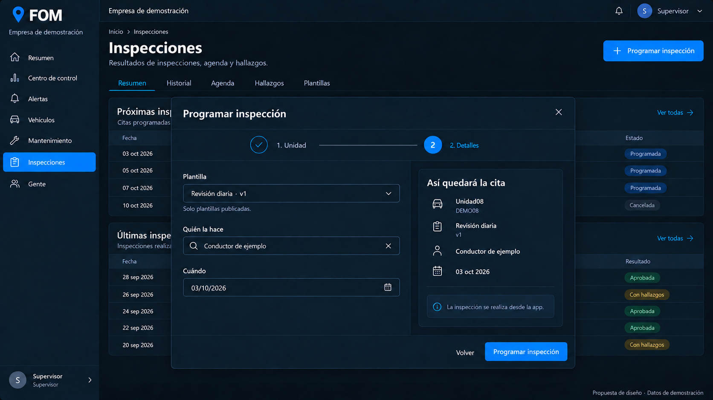
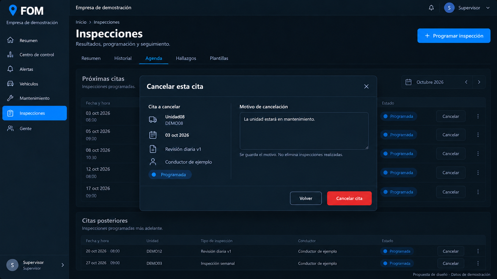
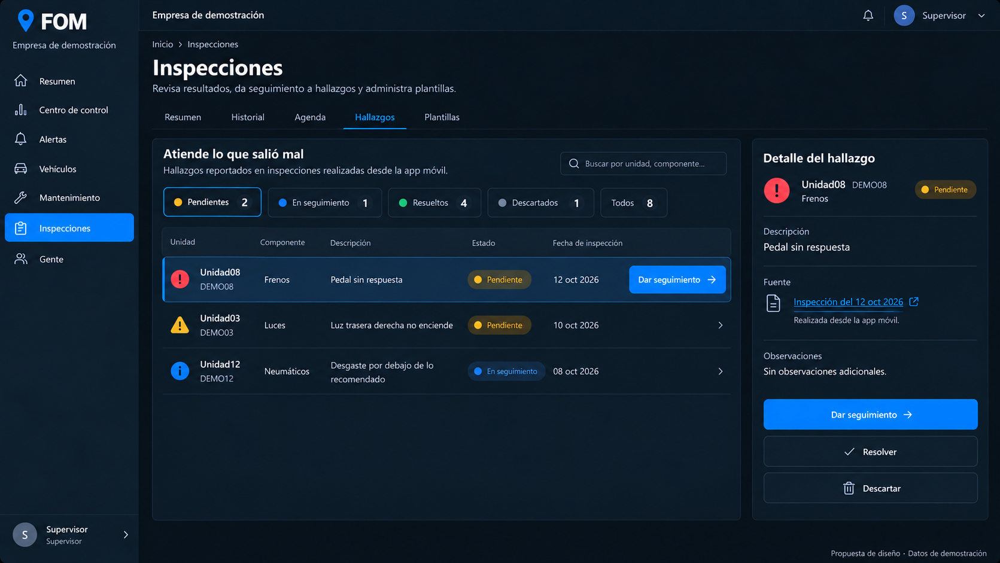
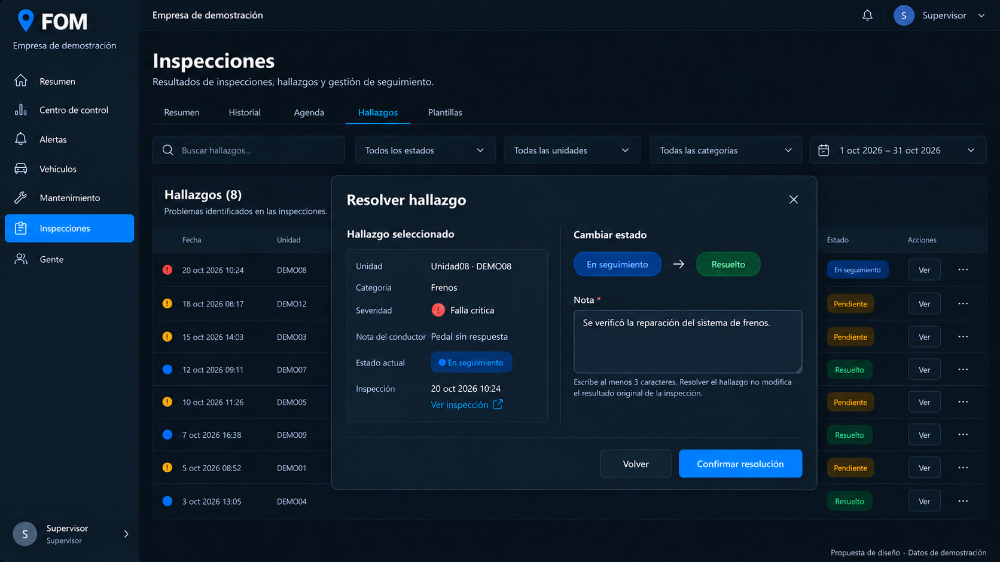
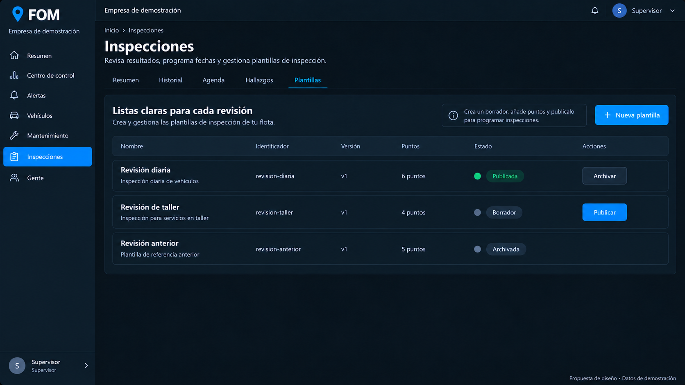
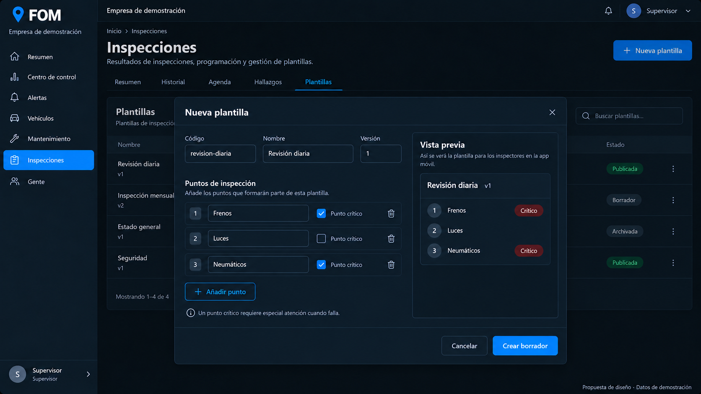
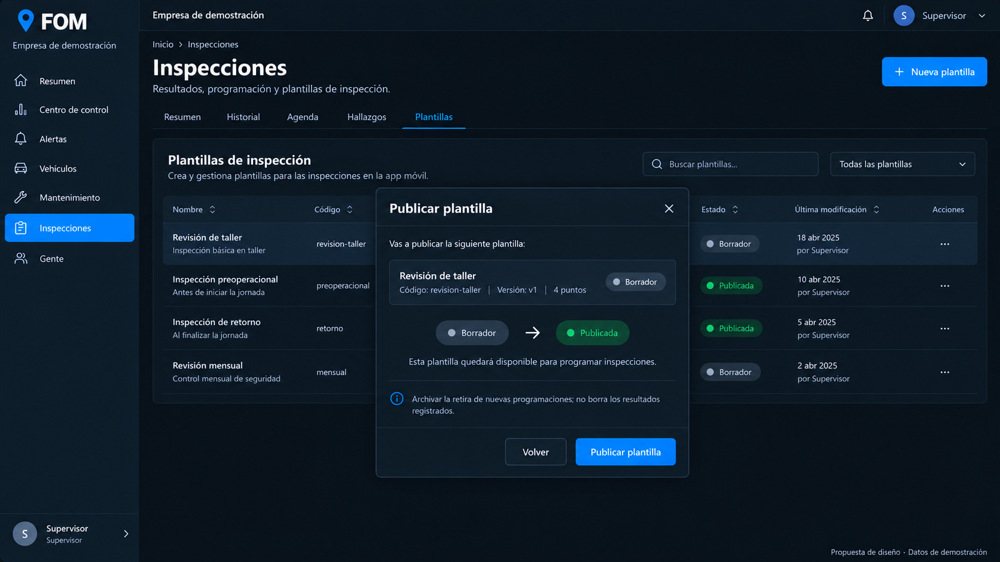